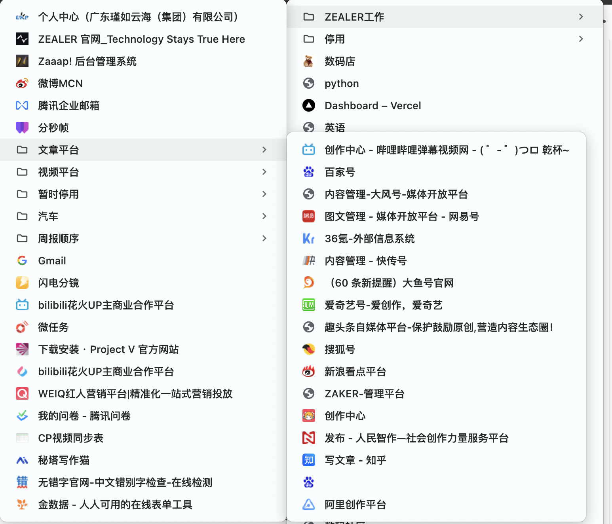
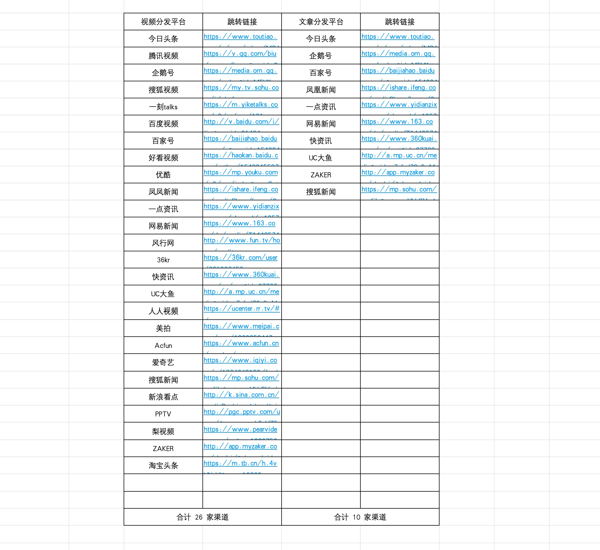
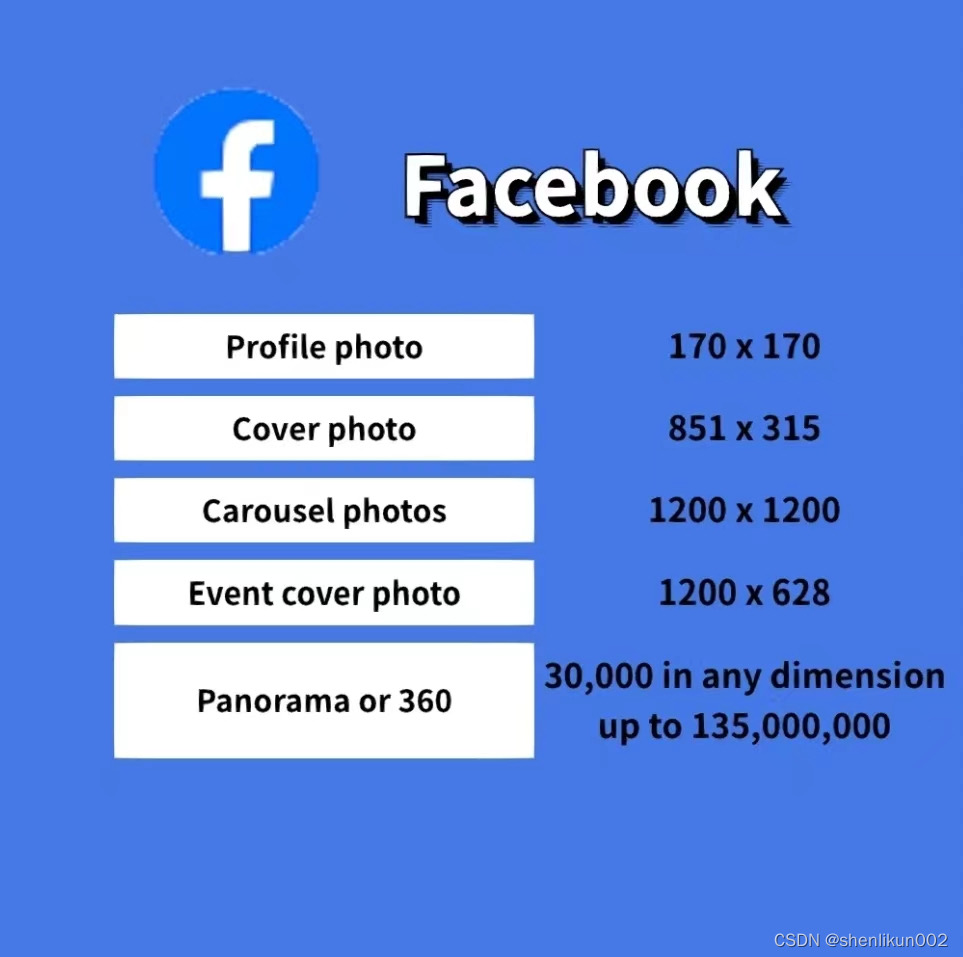
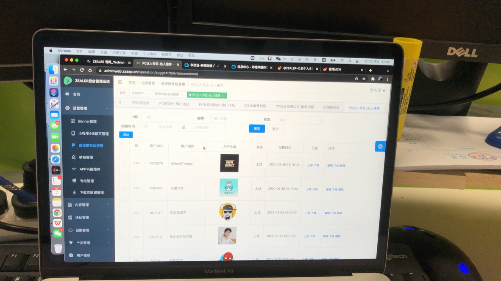
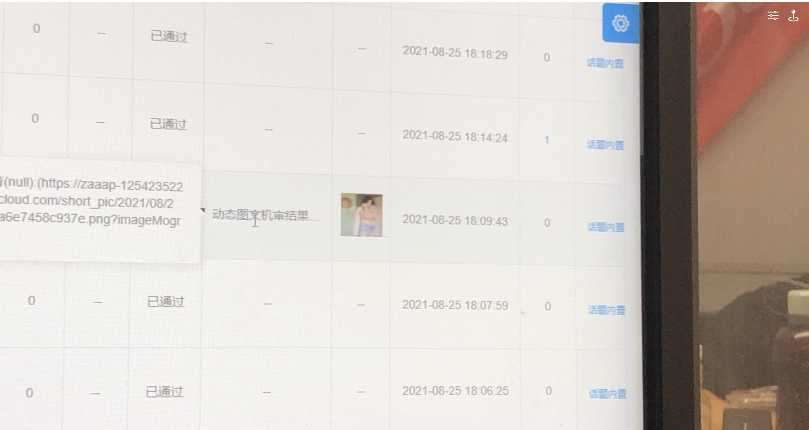

主流社媒平台的内容技术标准与社媒运营资料
📑 目录
我留意到大部分内容制作团队并没有针对不同的平台进行内容适配，只是粗暴地将主营平台的内容移植。
这样的重数量、轻运营，确实可以提升团队的商单报价，带来一些纸面上的商业价值，但会加重数据表现不如专心研究一两个主流平台团队的问题。
所以我去查了主流平台的内容技术要求，结合过往工作积累的经验，希望能总结些有用的方法和资料。
HDR：
https://lizhongping.asia/article/HDR
为什么需要技术标准？
1、平台会对我们上载的内容进行二次处理。比如对大尺寸大体积的文件强行裁切、重新封装、对元数据进行删除和修改，对视频进行转码等。这会一定程度影响视频和图文质量，降低视觉观感，导致内容权重降低进而可能导致数据表现下降
能做什么？
了解审核策略和技术标准，可以在内容生产阶段进行适配。比如根据尺寸有针对性优化内容构图，设计优化，在不影响内容的情况下提升评分
algorithm（算法标准）：
目前所有的主流社媒平台都引入了AI审核。大部分是AI初审，提取关键信息后进行人工二审。
包括我曾经兼任过的ZEALER APP👇
材料备份：
https://www.baike.com/
B站HDR视频转SDR技术标准：
https://mp.weixin.qq.com/s/4xouKDT2s_OVAVQpRtz4eg
bilibili全站使用说明:
https://www.bilibili.com/blackboard/help.html
B站评论审核政策:
https://mp.weixin.qq.com/
文件：
[11月小红书官方达人名单及刊例价 20231107(2).xlsx]
[1000+小红书爆款标题汇总(学习、美妆、探店、母婴、穿搭、宠物、旅行、居家等类目).xlsx]
[蒲公英平台-从0到1玩转小红书内容合作.pdf]
[小红书社区公约与审核规则(1).pdf]
[热门笔记打造技巧-一弯.pdf]
[从注册到运营全流程：小红书运营策划全案（25页PPT）.pdf]
[小红书-不再收到“违规信’，小红书合规运营.pdf]


主流社媒平台多媒体内容技术标准查备清单
尺寸 1、小红书 头像:400x400px 个人背景图:1000X800px 图文封面(竖版):1242X1660px(3:4) 图文封面(方版):1080X1080px(1:1) 图文封面(横版):2560X1440px(16:9) 视频封面(竖版):1080X1440px(3:4) 视频封面(横版):1440X1080px(3:4)；1920X1080px(16:9) 二、微信 公众号头像:240x240px 公众号封面:900x383px 公众号小图:200x200px(1:1) 公众号二维码名片:600x600px(1:1) 公众号内容引导图:1080x300px 视频号封面(竖版):1080x1260px(6:7) 视频号封面(横版):1080x608px(16:9) 小程序封面:520x416px 朋友圈封面:1280x1184px 三、微博 微博主页封面:980x300px 微博头条封面:980x560px 微博焦点图片:540x260px 微博长图:800x2000px 四、抖音 抖音头像:400x400px 抖音个人背景图:1125x633px 抖音封面(竖版):1242x1660px(3:4) 1080x1920px(9:16) 抖音封面(横版):1080x608px(16:9) 查看抖音百科:https://www.baike.com/ 五、B站 B站视频封面:1146*717px 2023年11月底开始B站投稿封面要求改为4:3（1200x900像素） 2024年开始B站要求同时上传16:9和4:3两种尺寸的封面 七、500px null 八、其他** 条漫:1000*2500px TB BANNER:1920*700px 电商海报(横版):1200*1920px 电商海报(竖版):1920*1200px 手机海报:1080*1920px 图海报:800*2000px 九、海外媒体 （2024年3月资料）YouTube官方公布YouTube 2160p30的推荐上传码率为 35–45 Mbps，而YouTube又会将视频用 H.264(avc1) 和vp9再压制一次用于分发。（以LG的[OLED 展示片]为例，用[yt-dlp]看所有播放格式的码率，同时也用ffmpeg做检验，最高清的2160p60HDR的vp9视频流码率仅为27.5Mbps）

部分平台会对内容进行打分，判断主持人的情绪、声音、文本、技术质量等元素进行评分。我猜想算法后续可能还会分析音轨、画面变化评审打分。 500PX：打分严格。500px作为摄影师社区，主要的侧重点在技术质量上。会读取图片直方图，对图片进行评价，赋予标签。 bilibili：严格。AI审核，然后一定会转人工进行二审。和抖音一样，B站审核人员看到的是AI标注的关键片段，而不是整个视频 weibo：严格。关键字、短语、文字情绪的检测，图文AI筛查👇。二次修改的内容会降低权重，并且人工审核。
YouTube：审核政策宽松。仅检测是否有政治、血腥、小孩、色情等元素 微信：不懂 小红书：关键字检测，分类权重，保量推荐， 抖音：星图的内容一定会经过AI审核打分，然后标注出可能存在问题的片段，转人工二审 ins：宽松。 内容冷处理/冷启动： #抖音主要参考点赞、评论、转发和完播率 #weibo主要检测关键词和短词 #小红书采取保量 #bilibili根据标签 地域差异化推送： #根据不同的地区推荐不同的内容，这点在娱乐直播中最为常见（运营团队会通过爬虫工具爬取热门地区目前的上播率。如果该地区的大主播目前没开播，那么运营会通过gps修改工具把自己主播的设备修改为该地区，利用推送规则，获取热门地区的流量）。上海人能刷到的关于上海话的内容会更多。所以相对的，制作具有地域属性的内容也会自动关联该地区。 其他运营技巧： 1、时间与区域分流： 2、服务商运营维护 3、辅助运营，如整合营销，IP联动 4、SEO优化，排名粉，矩阵传播等辅助方式 常见分辨率总结表：| 分辨率名称 | 分辨率（横向 x 纵向） | 常见应用 |
|---|---|---|
| 2K | 2048 x 1080 | 电影行业标准 |
| Full HD | 1920 x 1080 | 消费级显示器、电视 |
| 4K | 4096 x 2160 | 电影行业标准 |
| 4K UHD | 3840 x 2160 | 消费级显示器、电视 |
| 8K | 7680 x 4320 | 超高分辨率电视、显示器 |